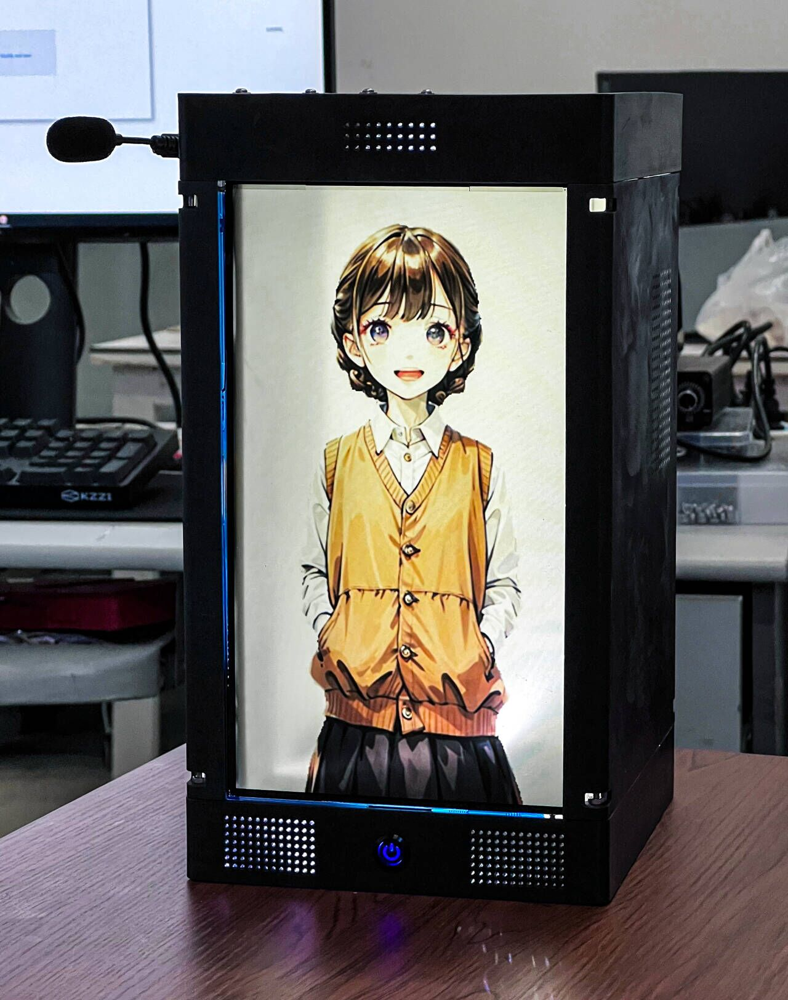

About Me
Exclusive Interview


Research Publications
[1] H. Zhang, M. Huang, and J. Wang, “Evolving Collective Cognition in Human–Agent Hybrid Societies: How Agents Form Stances and Boundaries,” Nature Communications (JCR Q1, Under Review), 2025.
[2] H. Zhang, J. Yin, M. Jiang, and C. Su, “Can Agents Spontaneously Form a Society? Introducing a Novel Architecture for Generative Multi-Agent to Elicit Social Emergence,” in Adjunct Proceedings of the 37th Annual ACM Symposium on User Interface Software and Technology (UIST) (CCF A), 2025.
[3] H. Zhang, J. Yin, H. Wang, and Z. Xiang, “ITCMA: A Generative Agent Based on a Computational Consciousness Structure,” Applied Soft Computing (JCR Q1, Under Minor Revise), 2025.
[4] H. Zhang, Z. Xiang, and J. Yin, “Social Intimacy and Skewed Love: A Study of the Attachment Relationship between Internet Group Users and a Digital Human,” Computers in Human Behavior: Artificial Humans (JCR Q1 TOP Sub-Journal), 2023.
[5] H. Zhang, B. Duan, H. Wang, Z. Qiao, and J. Yin, “The Tribal Theater Model: Social Regulation for Dynamic User Adaptation in Virtual Interactive Environments,” Cognition, Technology & Work (JCR Q2), 2025.
[6] H. Zhang, Z. Qiao, H. Wang, B. Duan, and J. Yin, “VCounselor: A Psychological Intervention Chat Agent Based on a Knowledge-Enhanced Large Language Model,” Multimedia Systems (JCR Q2), vol. 30 (6), 363, 2024.
[7] H. Zhang, J. Yin, and H. Wang, “A Needs Learning Algorithm Applied to Stable Gait Generation of Quadruped Robot,” Sensors (JCR Q2), vol. 22(19), 2022.
[8] H. Zhang, X. Zhang, X. Zhang, H. Dong, and X. Li, “A Study on the Factors Influencing the Teaching Effect of Moral and Social Courses in Primary Schools,” International Journal of Information and Communication Technology Education (JCR Q2), vol. 18(2), 2022.
[9] H. Zhang, J. Yin, and X. Zhang, “The Study of a Five-Dimensional Emotional Model for Facial Emotion Recognition,” Mobile Information Systems (JCR Q4), vol. 2020, 2020.
Evolving Collective Cognition in Human–Agent Hybrid Societies: How Agents Form Stances and Boundaries
Can Agents Spontaneously Form a Society? Introducing a Novel Architecture for Generative Multi-Agent to Elicit Social Emergence

|
Generative agents have demonstrated impressive capabilities in specific tasks, but most of these frameworks focus on independent tasks and lack attention to social interactions. We introduce a generative agent architecture called ITCMA-S, which includes a basic framework for individual agents and a framework called LTRHA that supports social interactions among multi-agents. This architecture enables agents to identify and filter out behaviors that are detrimental to social interactions, guiding them to choose more favorable actions. We designed a sandbox environment to simulate the natural evolution of social relationships among multiple identity-less agents for experimental evaluation. The results showed that ITCMA-S performed well on multiple evaluation indicators, demonstrating its ability to actively explore the environment, recognize new agents, and acquire new information through continuous actions and dialogue. Observations show that as agents establish connections with each other, they spontaneously form cliques with internal hierarchies around a selected leader and organize collective activities. |
ITCMA: A Generative Agent Based on a Computational Consciousness Structure
Social Intimacy and Skewed Love: A Study of the Attachment Relationship between Internet Group Users and a Digital Human
The Tribal Theater Model: Social Regulation for Dynamic User Adaptation in Virtual Interactive Environments

This paper proposes a social regulation model for dynamic adaptation according to user characteristics in virtual interactive environments, namely the tribal theater model. The model focuses on organizational regulation and builds an interaction scheme with more resilient user performance by improving the subjectivity of the user. This paper discusses the sociological theoretical basis of this model and how it was migrated to an engineering implementation of a virtual interactive environment. The model defines user interactions within a field that are regulated by a matrix through the allocation of resources. To verify the effectiveness of the tribal theater model, we designed an experimental scene using a chatroom as an example. We trained the matrix as an AI model using a temporal transformer and compared it with an interaction field with different levels of control. The experimental results showed that the tribal theater model can improve users’ interactive experience, enhance resilient user performance, and effectively complete environmental interaction tasks under rule-based interaction.
VCounselor: A Psychological Intervention Chat Agent Based on a Knowledge-Enhanced Large Language Model
|  |
Conversational artificial intelligence can already independently engage in brief conversations with clients with psychological problems and provide evidence-based psychological interventions. The main objective of this study is to improve the effectiveness and credibility of the large language model in psychological intervention by creating a specialized agent, the VCounselor, to address the limitations observed in popular large language models such as ChatGPT in domain applications. We achieved this goal by proposing a new affective interaction structure and knowledge-enhancement structure. In order to evaluate VCounselor, this study compared the general large language model, the fine-tuned large language model, and VCounselor's knowledge-enhanced large language model. At the same time, the general large language model and the fine-tuned large language model will also be provided with an avatar to compare them as an agent with VCounselor. The comparison results indicated that the affective interaction structure and knowledge-enhancement structure of VCounselor significantly improved the effectiveness and credibility of the psychological intervention, and VCounselor significantly provided positive tendencies for clients' emotions. The conclusion of this study strongly supports that VConselor has a significant advantage in providing psychological support to clients by being able to analyze the patient's problems with relative accuracy and provide professional-level advice that enhances support for clients. |
A Needs Learning Algorithm Applied to Stable Gait Generation of Quadruped Robot
Based on Maslow’s hierarchy of needs theory, we have proposed a novel machine learning algorithm that combines factors of the environment and its own needs to make decisions for different states of an agent. This means it can be applied to the gait generation of a quadruped robot, which needs to make demand decisions. To evaluate the design, we created an experimental task in order to compare the needs learning algorithm with a reinforcement learning algorithm, which was also derived from psychological motivation theory. It was found that the needs learning algorithm outperformed the reinforcement learning in tasks that involved making decisions between different levels of needs. Finally, we applied the needs learning algorithm to the problem of stable gait generation of quadruped robot, and it had achieved good results in simulation and real robot.
A Study on the Factors Influencing the Teaching Effect of Moral and Social Courses in Primary Schools
The Study of a Five-Dimensional Emotional Model for Facial Emotion Recognition
Based on basic emotion theory and the PAD emotion model that can describe continuous emotion changes, we first propose a more general concept of a five-dimensional emotion model to better meet the needs in the area of emotion recognition. We determined the relationship between its dimensions and basic emotions, and used a Pearson correlation analysis, multi-layer perceptron, and other methods to compare and verify it with volunteer human identifiers. The results demonstrated that the five-dimensional Emotion model was better than human identification in the field of emotion recognition. We also compared it with the PAD emotion model. The results demonstrated that the five-dimensional emotion model performed better. Finally, using the proposed model, we designed a technology prototype of a mood adaptive interface to demonstrate its potential application.
Miscellaneous Experience
Skills Python, Java, JavaScript, C, C#, C++, SQL. Interdisciplinarity Computer Science, Psychology, Sociology, and Philosophy. Hobbies Photography, Reading, Literary Writing, and Musicals.
Intermediate Industrial Internet Platform Development Engineer (Level 5)
Awarded by Ministry of Industry and Information Technology of China
Yunnan Province’s Merit Graduate Students
2024 Awarded by Education Department of Yunnan Province, China
National scholarship for Postgraduates
2023 Awarded by Ministry of Education of China
Outstanding Undergraduate Thesis
2022 Awarded by Kunming University of Science and Technology
Second Prize
The 13th China University Computer Design Competition
Second Prize
Python Group, The 11th Lanqiao Cup China Software and Information Technology Professionals Competition